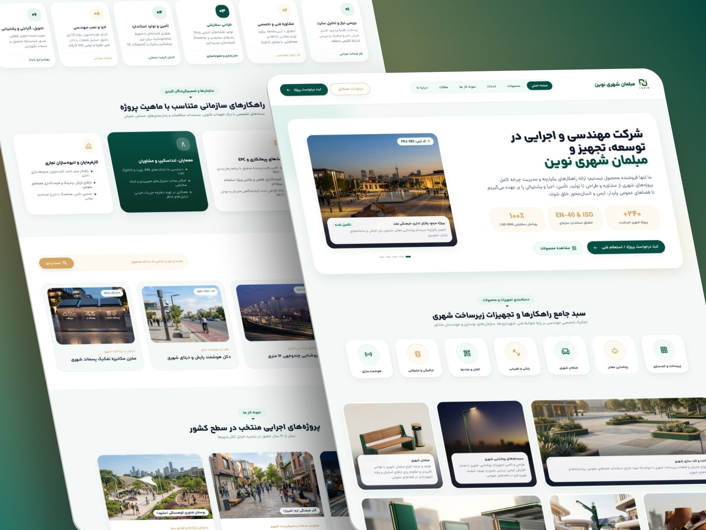
مبلمان شهری نوین
تجربهی یک وبسایت B2B برای معرفی راهحلهای شهری، محصولات و خدمات؛ با هدف سادهترشدن ارتباط سازمانها و صاحبان پروژه با شرکت برای همکاری و ثبت درخواست.
از نرمافزارهای سازمانی و محصولات مبتنی بر AI تا EdTech، پلتفرمهای B2B و وبسایتهای مصرفکننده؛ این پروژهها بخشهای مختلف تجربهی من در طراحی محصول و UX را نشان میدهند.

تجربهی یک وبسایت B2B برای معرفی راهحلهای شهری، محصولات و خدمات؛ با هدف سادهترشدن ارتباط سازمانها و صاحبان پروژه با شرکت برای همکاری و ثبت درخواست.
طراحی سیستم مدیریت املاک شامل ثبت و ارزیابی ملک، اسناد، سوابق مالکیت و گردشهای عملیاتی مرتبط؛ همراه با مشارکت در تحلیل نیازمندیها.
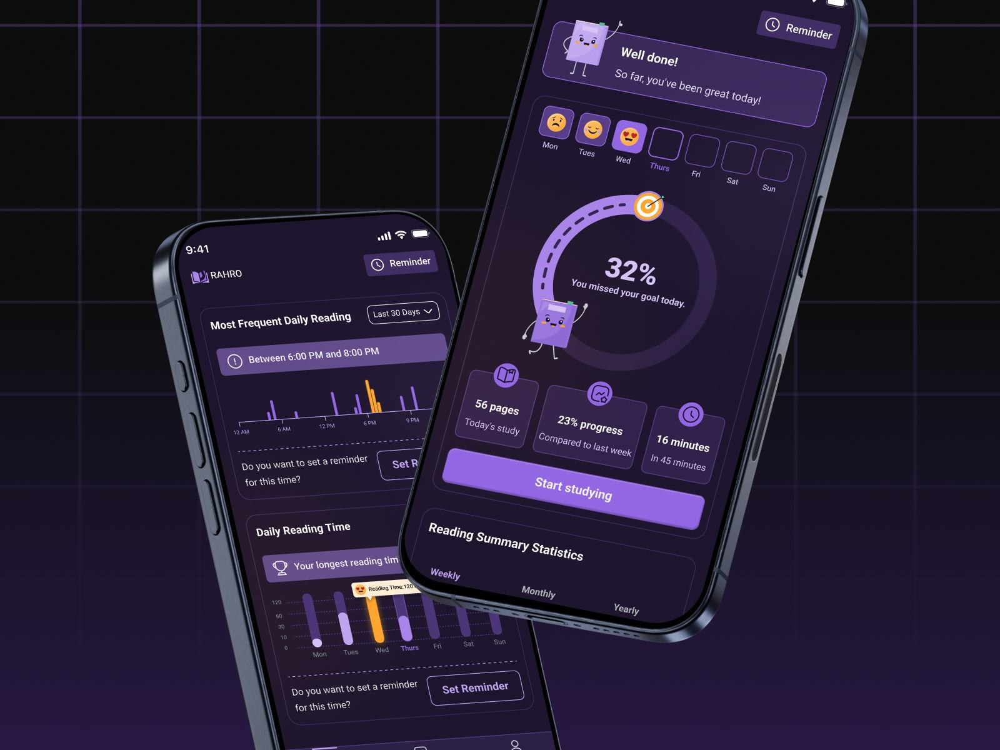
رهرو اپلیکیشنی برای مدیریت و پیگیری عادت مطالعه است؛ با امکاناتی برای بیشترکردن مطالعه و مرتب نگهداشتن کتابها.
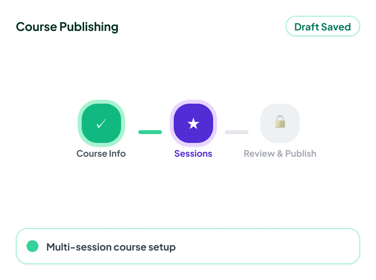
بازطراحی یک جریان طولانی و چندمرحلهای انتشار دوره برای بهبود ترتیب مراحل، کاهش سردرگمی و سادهترشدن بارگذاری محتوای چندجلسهای.
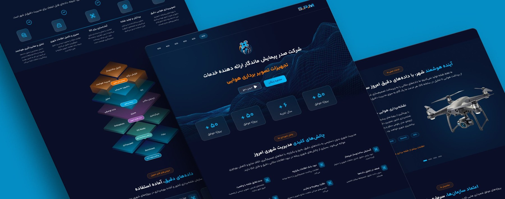
طراحی وبسایت B2B برای یک شرکت نقشهبرداری هوایی؛ با معرفی خدمات نقشهبرداری در مقیاس شهری و راهحلهای دادهی GIS، بر پایهی معماری اطلاعات ساختارمند و تجربهای دیجیتال و مدرن.
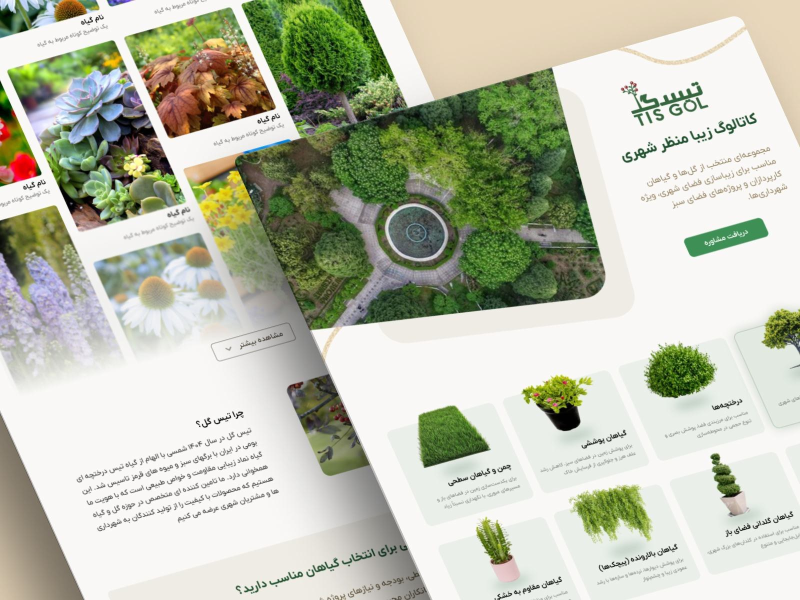
تیسگل در انتخاب گیاه و راهحلهای فضای سبز شهری فعالیت میکند. یک وبسایت کاتالوگمحور طراحی کردم تا کاربران گیاه مناسب پیدا کنند و برای پروژههای شهری مشاوره بگیرند.
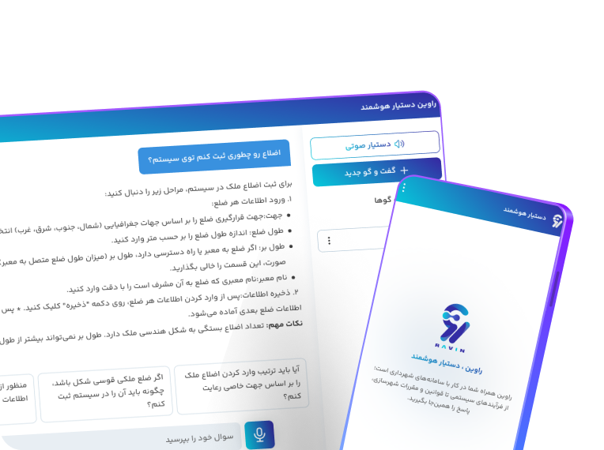
راوین دستیار پشتیبانی و آموزش کاربران یک محیط نرمافزاری پیچیده است. تمرکز من روی رفتار دستیار بود؛ از جریان گفتوگو و رفع ابهام تا مدیریت خطا، اعتماد و محدودیتهای فنی.
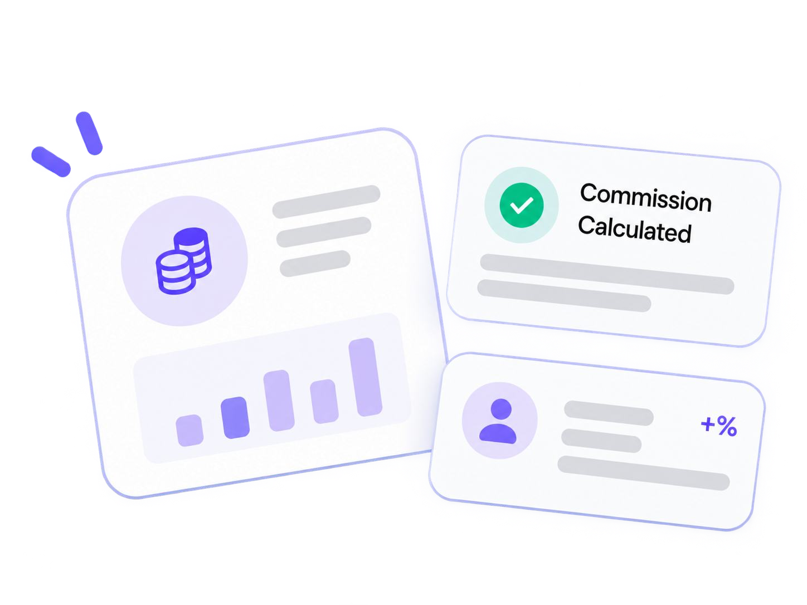
طراحی یک سیستم سازمانی برای مدیریت پروندههای کمیسیون شهرداری؛ شامل تنظیم جلسه، بررسی پرونده، رأیگیری، تصمیم، اسناد، صورتجلسه و گردشهای چندوضعیتی.
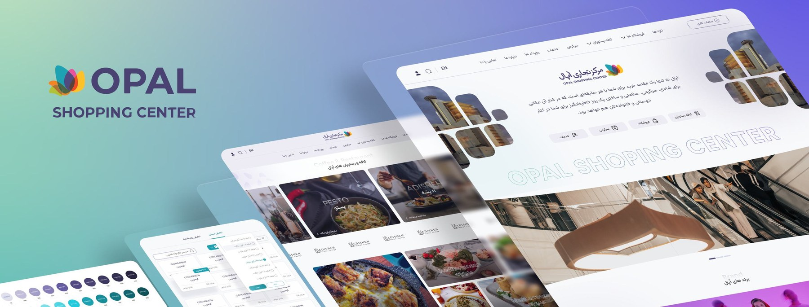
اپال یک مجموعهی بزرگ خرید و سبک زندگی با فروشگاه، رستوران، سرگرمی، رویداد و خدمات بازدیدکنندگان است. سایت مشتریان را برای بهبود معماری اطلاعات، ناوبری و دسترسی به بخشهای مختلف و حساب کاربری بازطراحی کردم.
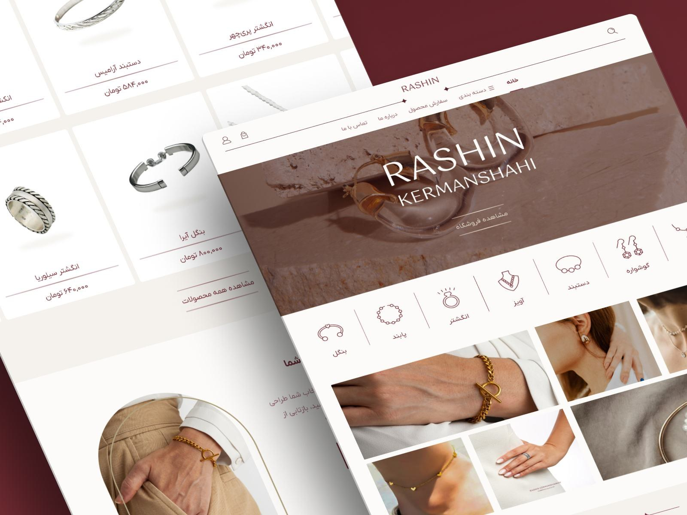
وبسایت فروشگاهی راشین برای نمایش زیبایی و هویت هر قطعه طراحی شد. هدف، تجربهای ظریف، مینیمال و ساده بود که روایت محصول را بهتر کند و به فروش کمک کند.
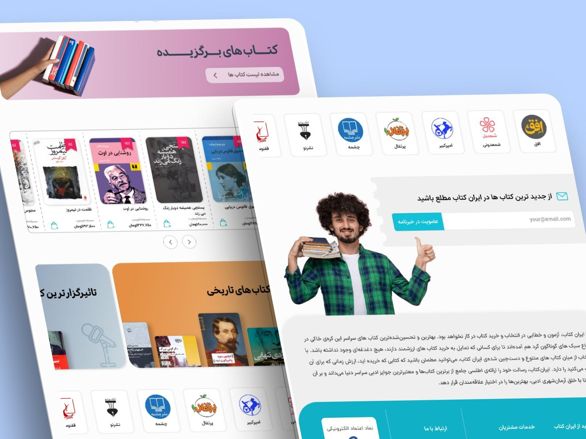
طرح بازطراحی ایرانکتاب، فروشگاه آنلاین کتاب، با تمرکز بر رابطی قابل فهمتر، سادهتر و مناسب موبایل برای بهبود تجربهی کاربر.
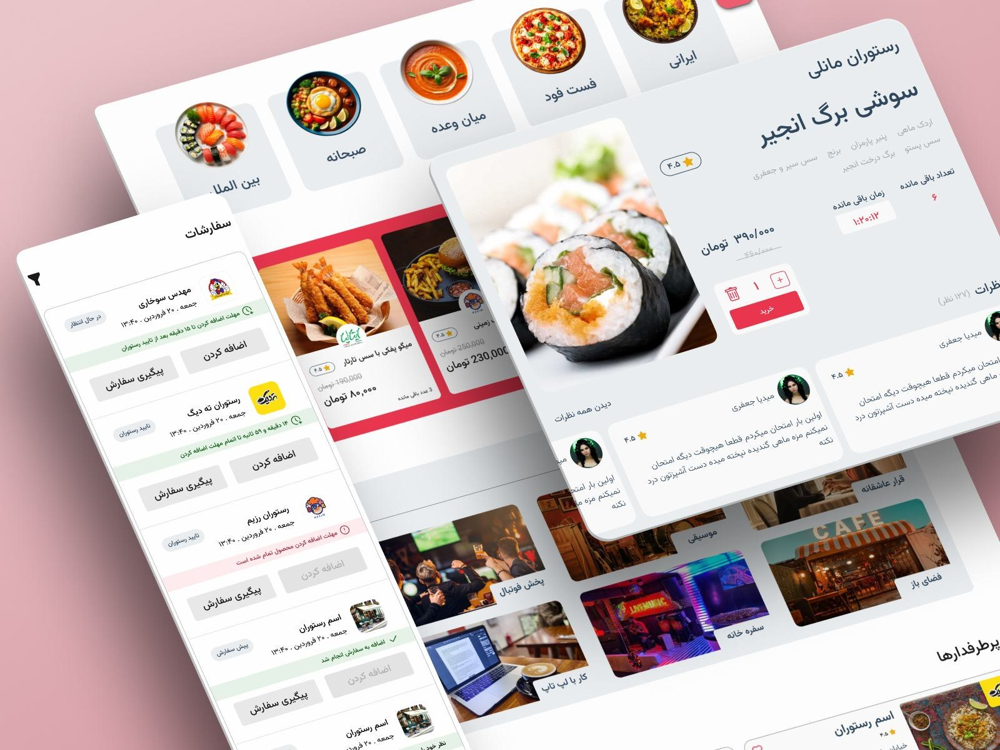
بازطراحی یک پلتفرم سفارش آنلاین غذا، با تمرکز بر حل مسئلههای واقعی کاربران که در تحقیق کاربر شناسایی شدند.
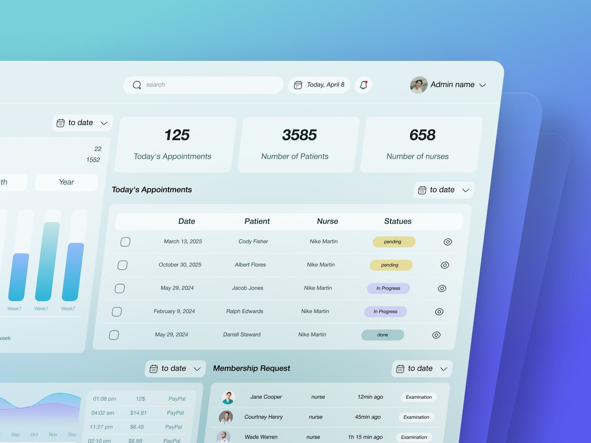
یک پنل مدیریت مدرن و کاربردی برای پلتفرمی پزشکی که به کلینیکها، پزشکان و تیم پشتیبانی کمک میکند کارها را یکجا مدیریت کنند.
همیشه از گفتوگوهای فکرشده دربارهی طراحی محصول، فرصتهای تازه و مسئلههای جالب استقبال میکنم.